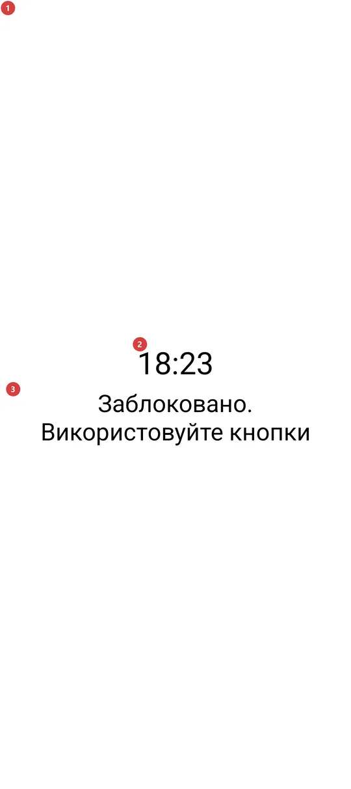
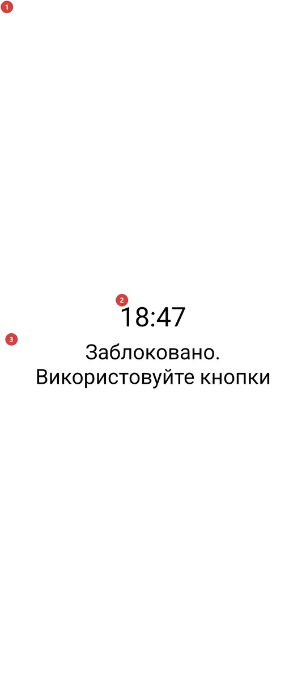

Водний ліхтар
Для чого цей екран
Водний ліхтар запалює спалах камери та весь екран на повну яскравість, а потім замикає екран від дотиків. Він зроблений для мокрих рук - під дощем чи в душі, - коли сенсор натискає сам себе. Виходять із нього кнопкою гучності, а не дотиком до скла.


Порядок дій
- Відкрийте «Водний ліхтар» з меню програм, із панелі програм або віджетом на домашньому екрані. Якщо його там немає, спершу ввімкніть його в «Налаштуваннях», на вкладці «Управління», у групі «Додаткові програми та сценарії». Спалах камери й екран 1 засвітяться одночасно.
- Відтоді екран замкнений. На ньому видно лише час 2 і нагадування 3, а дотики до скла нічого не роблять: мокрі пальці й краплі не можуть ні закрити, ні притьмарити, ні натиснути щось. Підказка «Заблоковано. Використовуйте кнопки» 3 означає кнопки гучності 4.
- Щоб вимкнути світло, натисніть кнопку гучності 4: гучність угору, гучність униз або «без звуку». Екран закриється, коли ви відпустите клавішу, а гучність не зміниться.
- Екран не гасне, поки світло ввімкнено, тож торкатися телефона, щоб він і далі світив, не потрібно.
- Якщо ви вийдете іншим способом 5 - кнопкою живлення чи системним жестом, - спалах теж згасне, і в кишені він горіти не залишиться. У воді на жест не розраховуйте: краплі можуть його викликати, і світло зникне.
Елементи
Світний екран
1Світний екранБілий екран на повній яскравості з увімкненим спалахом камери, глухий до будь-яких дотиків.
Вікно біле, на найвищій яскравості, і разом із ним світить спалах камери. На телефоні без спалаху програма теж працює: тоді єдине світло - це екран. Підвищується лише яскравість цього вікна, а не налаштування яскравості телефона, тому після виходу телефон такий самий яскравий, як був.
Усі дотики до екрана навмисно поглинаються, тож вода на склі нічого не закриє й не змінить. З тієї ж причини сховано рядок стану та кнопки навігації. Свідомий свайп від краю екрана все ж може ненадовго повернути системні панелі.
Час і нагадування
2ГодинникЧас великими чорними цифрами, який видно з витягнутої руки.
Годинник оновлюється на початку кожної хвилини. У якому форматі його показано, 12 чи 24 години, залежить від системи одиниць застосунку (метрична показує 24 години, американська - 12), а не від формату годинника пристрою. Це лише індикатор, торкатися його не можна.
3Заблоковано. Використовуйте кнопкиНагадує, що дотики вимкнено і виходити треба кнопкою.
Рядок завжди на екрані, тому не доведеться згадувати в темряві чи під дощем, як вийти. Кнопки, про які в ньому йдеться, - це апаратні кнопки телефона, насамперед кнопки гучності. Дотик до тексту нічого не робить.
Як вийти
4Кнопки гучностіВихід: натисніть кнопку гучності - і світло згасне.
«Гучність угору», «гучність униз» і «без звуку» закривають екран і гасять спалах. Екран закривається, коли ви відпускаєте клавішу, а саме натискання поглинається, тож гучність музики чи дзвінка не змінюється. Клавіша камери, кнопка на гарнітурі та медіаклавіша «пуск/пауза» роблять те саме на пристроях, де вони є.
Кнопка «Назад» навмисно не входить до клавіш виходу: за навігації жестами «назад» надходить від свайпу по склу, а мокре скло саме дає такі свайпи. Якщо на пристрої немає кнопок гучності, доведеться скористатися іншими способами виходу, описаними нижче.
- Сполучення клавіш
- Volume up / Volume down / Mute
5Кнопка живлення та системні жестиІнші способи вийти. Вони теж гасять світло, але вода може їх викликати.
Екран не закріплює себе й не блокує системні жести. Кнопка живлення гасить дисплей, а жест «додому» чи перемикання застосунків виводить на інший екран; в обох випадках спалах згасає одразу, тож залишити його палаючим у кишені чи сумці не можна.
У воді на ці способи не розраховуйте: крапля на склі може викликати жест, і світло зникне, коли воно потрібне. Коли хочете вимкнути світло самі, натискайте кнопку гучності.